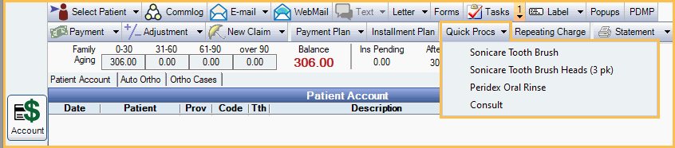

Quick Procs
Use the Quick Procs button to quickly add procedures to the patient's account.
In the Account Module, click the Quick Procs dropdown.
Quickprocs are useful to add retail items such as toothpaste or to add procedures that were not added via the Chart Module.
Add Quick Proc Items to the Patient's Account
There are two ways to add Quick Proc items. The Account Procs Quick Add Permission is required.
- Click the Quick Procs dropdown to select an item. The dropdown options are set up in Definitions: Account Procs Quick Add.
- Click the Quick Procs button (not the dropdown), type the full procedure code in the box, then press Enter. Codes are case sensitive. Create Completed Procedure (or set complete) permission is also required.

Note:
- Any procedures added using Quick Procs have a status of complete and also show in the Chart Module Progress Notes.
- If you add a procedure that requires a tooth or surface, users are prompted with a message to fix the tooth number or surface. Click OK, then enter the information on the Procedure Info Window.
- When added to the patient's account, the procedure description always matches the procedure code's description, not necessarily the definition's name.
- The provider assigned to the procedure defaults to the patient's primary provider, unless the procedure code has a provider assigned (Procedure Code, Assigned to Provider). Double-click a procedure to change the provider.
- Every time a quick proc item is added to a patient's chart, a log is created in the Audit Trail.
- Base units are not considered when adding procedures using Quick Procs.
Set up Quick Proc Items
All quick proc items must have a procedure code.
- Create new procedure codes for any quick proc items that don't already exist in the procedure code list. You can use any code you want, though you may want to consider using codes that are easy to type.
- Set up items that show in the Quick Proc dropdown. See Definitions: Account Procs Quick Add.